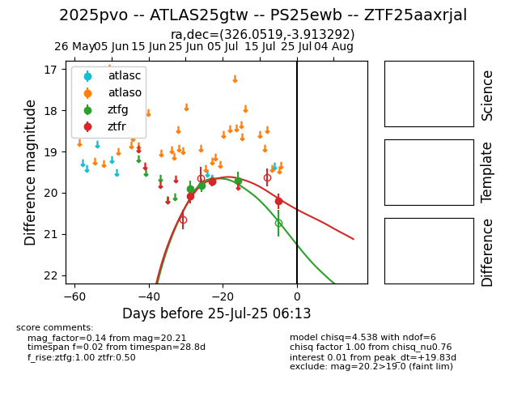

Target 2025pvo at 2025-07-25 06:13, see:
FINK: fink-portal.org/2025pvo
Lasair: lasair-ztf.lsst.ac.uk/objects/2025pvo
ALeRCE: alerce.online/object/2025pvo
TNS: wis-tns.org/object/2025pvo
YSE: ziggy.ucolick.org/yse/transient_detail/2025pvo
alt names
ZTF25aaxrjal (ztf,fink)
2025pvo (tns,yse)
ATLAS25gtw (atlas)
PS25ewb (panstarrs)
coordinates:
equatorial (ra, dec) = (326.0519,-3.91329)
galactic (l, b) = (51.9448,-39.70631)
photometry
last ztfg=19.70, ztfr=20.21
4 ztfg, 3 ztfr detections
